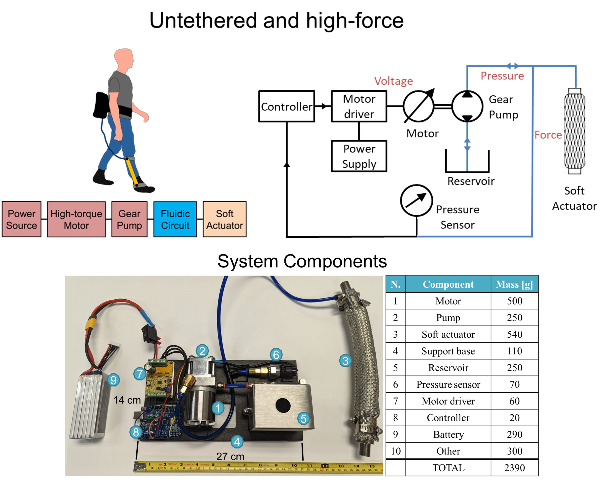
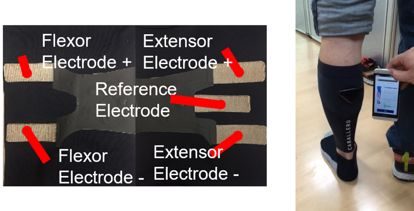

Lightweight and Compliant Tethered Cable-driven Actuator: Bidirectional Actuation
This hybrid soft exoskeleton design uses a cable transmission in combination with a rigid wearable structure with interior soft padding (like rigid exoskeletons producing large torque). The design utilizes a bidirectional cable-drive mechanism, which includes one flexion cable and one extension cable that pass through the distal pulley and terminate at the cable locking mechanism. Compared with traditional design that use one motor to actuate a unidirectional motion, our mechanism uses one motor to generate bidirectional actuation, thus it can further reduce the mass of the overall system.
Our hybrid soft exoskeleton has a larger moment arm (distance between human joint and the lumped center of the wearable structure, the same as rigid exoskeletons than textile soft exosuits (approximately the radius of the attached limb) and avoids shear forces to human. Thus, the hybrid soft exoskeleton requires much less force from the cable system to deliver the same amount of torque than textile soft exosuits.

Knee Exoskeleton Datasheet

Shoulder Exoskeleton Datasheet
Untethered Electro-Hydraulic Actuation for High-Force Soft Wearable Robots
State-of-the-art fluidic systems either exhibit high-force but tethered configurations, or portable but relatively low-force designs, which do not satisfy the requirements of wearable robot applications. The usage of hydraulics in biorobotic applications has increased in recent years, due to the advantage of high force to weight ratios, energy and power density. To this end, we designed a fully integrated minimal set of hardware components for power, actuation, and control, by leveraging a direct coupling of a brushless direct current (DC) motor with a customized gear pump to drive a McKibben soft actuator. The proposed design achieves both portability (2.4 kg) and human-scale forces capability (500 N). These properties make the developed system appropriate for portable and collaborative applications, which can empower the deployment of soft wearable robots in daily life.

High-Force Fabric Soft Exosuit
This device utilizes precise estimates of the position of the user’s foot through gait cycle detection, whose data is drawn from the IMU, in order to provide adaptive assistance. The controller was placed onto a soft exosuit connected to an origami actuator operated by the folding of conductive material through compression.

The power of the soft exosuit was drawn by a 12V battery that was placed in a pouch at the hip, alongside a buck converter to control the voltage of the system, and a PCB containing the microcontroller, pressure sensor, and solenoid. The design of the controller was inspired by patients diagnosed with drop foot who prioritized portability and ease of access. The controller boasts a design that that utilizes methods of iterative control such as gait cycle detection to determine heel strike, flat foot, midstance, heel off, and toe off in order to properly perform the action needed by the user.
Fabric Muscle Activity Sensor
The textile EMG sensor is flexible, foldable, stretchable, washable for multiple times, and easily customizable to meet the heterogeneous needs of SCI individuals. The machine learning algorithms that can estimate the muscle status and the performance of functional ADLs by classification of function ADLs and the detection of muscle spasticity. The soft textronic sensors, its intelligent machine learning algorithms, and biofeedback-based rehabilitation has the potential to enable home-based rehabilitation and encourage more manipulation for function ADLs and independence in SCI and stroke individuals.
Sensing Suit
Wired system: 7 IMUs, IMU receiver, Arduino board and wired insole.
Wireless system: 7 IMUs, IMU receiver, wireless insole and Bluetooth board.